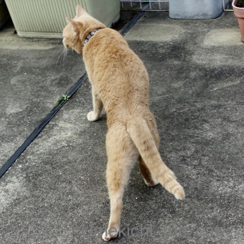
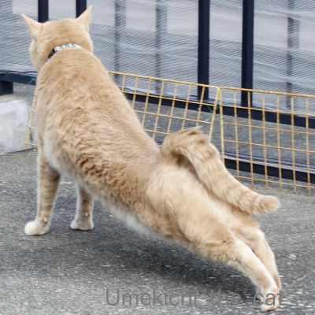
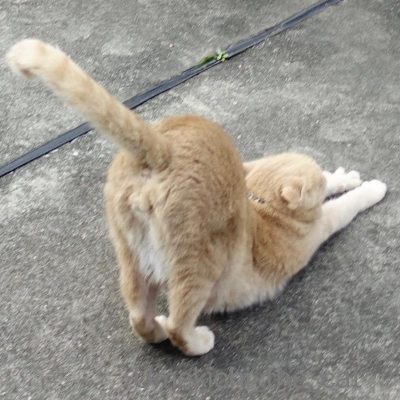
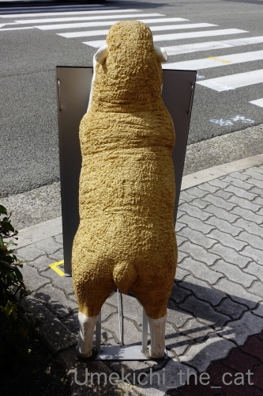
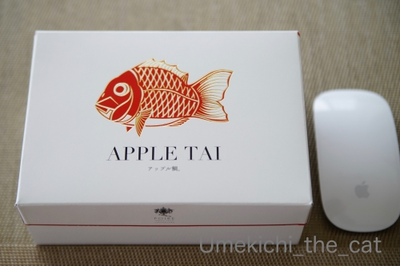

なんとなく似ているフタリ [梅吉]

右足、みょ〜ん

左足、みょ〜ん

両足で！

全身で！！

なんとなく似てませんか( ´艸｀)
（既出ネタですがお気に入りなので再登場しちゃった）


とても似ていませんか？ (≧▽≦)
この羊さんは我が家から程近いところにある老舗洋菓子店のマスコット＾＾
で、このお店から泳いできたものがw

アップルパイ ならぬ アップル・タイ。
折角なのでアップルマウスを大きさ比較においてみた。

目がちゃんと出てて「めでたい」www
バレンタインのお返しです＾＾
以前は2017年にも泳いできているので３年ぶりです＾＾
スタッフに「大きい方ですか？小さい方ですか？」と聞かれて
大小の二種類があったことに気づいたと言う(⌒-⌒;
スモールサイズは二等分して食べきりサイズ（我が家にとっては）でちょうど良かったです。
にしてもここのアップルパイは美味しいなぁ♡
＊＊＊＊＊＊＊＊＊＊＊＊＊＊＊＊＊＊＊＊＊＊＊＊＊＊＊＊＊＊＊＊＊＊＊＊＊＊＊＊
おっとのテレワーク、今月末までに延長になりました。Wow！！
会社に行かなきゃならないこともある様ですが
横並びの人々を尻目に基本テレワークにするようです。
心優しい奥さんが（爆）流石に「長い！！」と思ったかどうかは内緒ですw
梅吉も忙しい日々が続く！？(＠◇＠)
そんな先週のテレランチ。
賞味期限の近くなりつつある防災食も活用してます。
ごはんはパックのレンチンタイプ（サ◯ウのごはんみたいなの）
これにフリーズドライの牛すきの卵とじを乗せてどんぶりに。
牛すきの卵とじはお湯を入れて30秒くるくる混ぜるだけw
ちょい味が濃いめですがまあまあイケます。
お味噌汁はお湯を入れるだけ。これに常備野菜のサラダでチョー簡単www
あ、丼物の上に乗っているのはプランターで育ててる三つ葉です。
いまもりもり育っているので薬味にいろどりにと大活躍してまーす＾＾
フリーズドライのものって長期保存が効く様に思えますが
以外に賞味期限が短いものが多いんですよね。
物によっては半年とか！！
以前まとめ買いして消費するのに苦労したので買い方に気をつける様にしています。
今週も防災食消費に協力してもらわなきゃ＾＾

カフェオレ色の梅吉

梅吉 2023年8月10日 永眠


梅吉と出会った譲渡会

犬猫の理由なき殺処分ゼロ
妄想広告
UMEKICHI 光

爆発的に早い！
時々攻撃的！
Thanks to Mr.Boss365
爆発的に早い！
時々攻撃的！
Thanks to Mr.Boss365

梅吉さんと羊さん色も似てますからねー。
普通は猫と羊が似てるとは思えないけど。
by zombiekong (2020-03-16 00:35)
子猫さんはウサギさん並みに毛が柔らかくて
首に巻くとめっちゃ温かいです（爆）
by ぽちの輔 (2020-03-16 06:32)
梅吉さんのみょーんの足に萌え（≧∇≦）
ポーズといい、このプリチーなお尻のラインといい
梅吉さんと羊さん似てますねぇ( ^ω^ )
でも店の前の羊さんのお尻を撫でるのは危険認定されちゃうから
我慢してくださいねw
アップルタイ、美味しそうです=(^.^)=
by ニッキー (2020-03-16 07:36)
梅吉さんのみよ〜んに癒されてます（笑）
全身で気持ち良さそうです。
梅吉さんは羊さんのモデル！に違いありません。
アップルタイ、美味しそうですね〜（笑）
我が家、非常食がおかゆだけになりました（笑）
食料を補充しなくてはいけません。
水だけは5年保存を買ったばかりですが、
賞味期限があっという間に来ますね。
月日の流れは（本当に）早いと感じます。
by kiki (2020-03-16 08:41)
こんにちは！
ニャンコ様にしてはおかしいと思いながら拝見。
危うく間違えてしまうところでした！
by Take-Zee (2020-03-16 08:55)
梅吉さんのみょ～ん、堪能させていただきました♪
片足ずつのみょ～んのあんよも、両方のびーーも、全身ののびーーーも大好物。でも、なかなかシャッターチャンスがなくて。よく撮れましたねーー。すごいっ！
羊さん、似てます！モデル、梅吉さんなんじゃないのってくらい(笑)
アップルタイっておもしろーい。パイ生地ではなくて、たい焼きの生地的なのかしら。あまりパイ生地っぽくは見えないけど。
おっとさん、テレワーク継続、ちぃさんも梅吉さんもお疲れ様です。
そうそう、缶詰とかも賞味期限あるし、保存食をうまく日常でルーティンさせるのも大事ですよね。
by ChatBleu (2020-03-16 09:59)
梅吉さん、ギューッと伸びていますね！
羊と同じポーズで後ろ姿も似てますね(^^)
by ma2ma2 (2020-03-16 10:15)
梅吉さんは片足ずつみょ～んとストレッチをされるのですね(^^
うちの熟女らは両足同時バージョンを定番としています。
老舗洋食屋さんの看板羊？なにゆえ羊？と思ってしまった。
「アップルタイ」大阪人がこよなく愛するタイプのベタベタな感じですが
お味も宜しいようで何よりです。
防災食、消費期限をしっかりチェックしておかないとですね。
うちは何も準備していませんが(;^_^A
会社には水とクラッカー（ナビスコ的な感じ）が備蓄されていて期限が切れたものは職員がおやつ代わりに食べてます。
在宅ワーク延長、ご主人定年後の予行演習ということで(^^
by marimo (2020-03-16 11:27)
タイトルだけ見たとき、
テレワークで家に居るだんなさまと、膝にいる梅吉くんが
毎日毎日長く一緒にいるので、ふたりがなんとなく似てきたのだろうかと想像してしまいましたわｗｗ
相手はダンナさまではなく羊ちゃんでしたかｗｗ
防災食、こうやって盛り付けると立派なゴハン^^
わたしもレトルトの賞味期限が近づいてきてるのがあるので今月に入ってからは、昼はレトルトカレーが増えてます(笑)
減った分は生協でまた注文しておかなくちゃだ。
by リュカ (2020-03-16 11:55)
お〜似てる！
by tama (2020-03-16 12:30)
こんにちは。
猫変態の画像アップ？ありがとうです（笑）
梅吉君のストレッチ姿が最高ですね。意外に撮影出来ない瞬間の写真です。
３枚目で最高と思いましたが、とどめの４枚目には爆死させられました（爆）
梅吉君、羊さんに似てますね（笑）看板、盗難に合いそうで心配です。
「アップル・タイ」小生の好きな分野の文字列？！
サイズ的には微妙ですが、分けて食べるには丁度良いサイズですね。
テレワーク延長は、梅吉君には嬉しいニュース！！
奥さんは大変ですね（笑）「防災食も活用」はナイスです。
防災食はレトルト物も多く、一気に消費が難しいので良いアイデアです。
現在、辛めの食べ物が残っていて苦労しています！？(=^･ｪ･^=)
by Boss365 (2020-03-16 12:37)
あ～も～、伸びた足、連動して波打つ尻尾、ぷりぷりのおちり、チョップしたくなる足の隙間♪
猫変態による猫変態のための写真をたくさん感謝です(#^^#)
タイトルからおっとさんと梅吉さんがリビングで同じポーズで昼寝している様子を勝手に妄想してしまいました^^;
羊さんの後ろ姿、やっぱりチョップしたくなる・・・。
防災食がまるでおしゃれなカフェランチ♪
おっとさん、ず～っとテレワーク希望しちゃうかもしれませんね^^
保存食も買った時はまだまだ2年もあると思っていても、はっと気づくと期限明日まで、我が家よくあるあるでございます(≧▽≦)
by ゆきち (2020-03-16 12:59)
家で仕事って可愛いくて綺麗な奥様が隣にいて
手につくもんなんですかねぇ
俺なら 仕事そっちのけだなぁ
by (。・_・。)２ｋ (2020-03-16 15:53)
梅吉さん！セクシーポーズ♪
アンヨみよ～んが可愛過ぎます(*´ω｀*)
アップル・タイ！
美味しそうです！
ちょうど良いサイズだと嬉しいですね！
by きぃ (2020-03-16 19:27)
ビール、噴きこぼしました。
似てる～。^◇^;）
by yes_hama (2020-03-16 21:24)
クリソツだ～（ﾟ□ﾟ）
しかし、ヒツジに似てるとはw
by 英ちゃん (2020-03-16 23:24)
似てますね～、ポーズもバッチリ！
梅吉君、きれいに伸びてる～
フリーズドライ、我が家もしばらく前にお味噌汁をチェックして
期限切れと間近が数個あったので慌てて食べました
もっと長く持つとおもっていたのに～って感じです
梅吉君もいろんなものをかじったんですね
カランは猫さんのお口には大きそうだなぁ
梅吉君、ワイルド～
by 藤並 香衣 (2020-03-17 01:33)
ほんとクリソツですね(^^♪
梅吉さんの前世はこの羊だったのかも。
お尻まる出しのポーズに、
思わず画面に向かって手が伸びちゃいました(笑)
活きの良さそうなアップルタイ美味しそうだなぁ～
おっと冷凍庫の賞味期限確認しに行かないと・・・
by yamatonosuke (2020-03-17 01:40)
はい！はい！なんとなく似ています^^
by ニコニコファイト (2020-03-17 07:25)
似てますね～(^_^)
いたずらして羊さんに尻尾付けたり・・・な～んてしませんよね(^_^;)
by kou (2020-03-17 07:36)
アップル・タイ、初めて見ましたが、食べてみたい～～～！
テレワーク、うちの会社でもかなり推奨されてて
なんか会社行って仕事するのが白い目で見られる感じでしょうか？
不思議な局面になってきましたわ。。。
by よーちゃん (2020-03-17 13:34)
みょーーん♪いい伸びですｗｗ
貴重な部分までお見せいただいて恐縮ですっ(///ω///)
あの羊の看板は私も大好きです❤︎めっちゃかわいいですよね！
色的にも似ているし、今度からあの羊を見たら「梅ちゃん」
と呼びかけてしまうかも( *´艸｀*)
アップルタイも有名ですね♪お二人でちょうどいいサイズですねw
うちの会社も３月末まではテレワーク推奨のようです。
週１、２日は出勤しますが、在宅の味を覚えると早起きするのが
辛くなりそう(￣∀￣*)ｲﾋｯ 今週は今日からずっとテレワークです♪
by カトリーヌ (2020-03-17 13:40)
猫様の伸び～は自分までストレッチしている
気分になりますよね。あ、攣りそうってドキ
ドキしちゃう(笑)足が攣るのって人間だけな
のかしら。
by mio (2020-03-17 17:23)
似てます似てます。
梅吉くん、ヨガのポーズがお上手！と思ってしまいました。
アップルタイ！なんとステキなホワイトデー♡
結婚記念日のお花といい、すてきなご夫婦ですね～♪
by liang (2020-03-17 17:41)